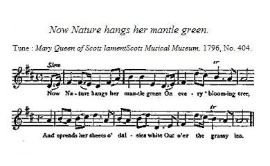
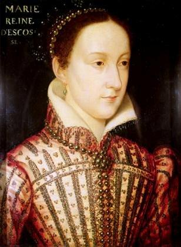

Lament of Mary Queen of Scots
Complainte de Marie Stuart
by Robert Burns
Tune - Mélodie"Lament of Mary Queen of Scots on the approach of Spring"
"Scots Musical Museum", 1797, No. 404, signed ' B.' .
Sequenced by Christian Souchon

|
To the tune:
A song on Queen Mary's lamentation "I sigh and lament me in vain" ' with a melody by the Neapolitan composer Giordanni , is well known: but neither words nor music have any relation to the ballad of Burns. [see below] The absorbing interest in Queen Mary is the excuse for noticing here the fabricated verses so long attributed to her on bidding adieu to her beloved France. The song was written by Meusnier de Querlon and first printed in his "Anthologie Françoise", 1765, with music. He pretended that he obtained it from a manuscript of the Duke of Buckingham, which has never been discovered. His countryman, Fournier exposed this and other of Querlon's tricks, and Charles dubs the song 'rimes barbares.' As a curiosity, the following are the original verses in the rare Anthologie: 'Adieu, plaisant pays de France, O ma patrie la plus chérie, Qui as nourri ma jeune enfance! Adieu, France, adieu mes beaux jours! La nef qui disjoint nos amours N'a cy de moi que la moitié: Une part te reste, elle est tienne. Je la fie à ton amitié, Pour que de l'autre il te souvienne. Source: "Complete Songs of Robert Burns Online Book" (cf. Links). |
A propos de la mélodie:
On connaît (dans les pays de langue anglaise) la mélodie qui accompagne la complainte de Marie Stuart, "Je soupire et me lamente en vain" , composée par le musicien napolitain Giordani [voir plus loin]. Mais ni les paroles ni la musique de ce chant n'ont de rapport avec la ballade de Burns. L'intérêt croissant que l'on porte à cette reine sera le prétexte pour faire ici un sort aux vers postiches qui lui furent si longtemps attribués et qui sont censés exprimer ses adieux à sa chère France. Ce chant a été composé par un certain Meusnier de Querlon et publié pour la première fois dans son "Anthologie Française , 1765, avec la musique. Il disait les avoir recopiés d'un manuscrit ayant appartenu au Duc de Buckingham, lequel n'a jamais été retrouvé. Son compatriote Fournier, démontra que cette pièce et plusieurs autres n'étaient que des faux fabriqués par Querlon. Charles qualifie cette poésie de "rimes barbares". A titre de curiosité voici ces vers, tels qu'on peut les lire dans cette rare Anthologie: 'Adieu, delightful land of France, Adieu, most endearing homeland, Which nourished my infancy Adieu, France, and days so happy! The craft that tears apart our loves But half of me away it shoves: The other half with you shall be. Pray, keep it with the greatest care, And remember the other, there! Translated by Christian Souchon (c) 2010. |

|
LAMENT OF MARY QUEEN OF SCOTS [1]
1. Now Nature hangs her mantle green On every blooming tree, And spreads her sheets o' daisies white Out o'er the grassy lea : Now Phoebus cheers the crystal streams, And glads the azure skies ; But nought can glad the weary wight That fast in durance lies. 2. Now laverocks [2] wake the merry morn, Aloft on dewy wing; The merle, in his noontide bow'r, Makes woodland echoes ring ; The mavis wild wi' monie a note Sings drowsy day to rest: In love and .freedom they rejoice, Wi' care nor thrall opprest. 3. Now blooms the lily by the bank, The primrose down the brae ; The hawthorn's budding in the glen, And milk-white is the slae : The meanest hind in fair Scotland May rove their sweets amang ; But I, the Queen of a' Scotland, Maun lie in prison strang. 4. I was the Queen o' bonnie France, [3] Where happy I hae been ; Fu' lightly rase I in the morn, As blythe lay down at e'en : And I'm the sov'reign of Scotland, And monie a traitor there; Yet here I lie in foreign bands, And never-ending care. 5. But as for thee, thou false woman, My sister and my fae, [4] Grim Vengeance yet shall whet a sword That thro thy soul shall gae ! The weeping blood in woman's breast Was never known to thee ; Nor the balm that draps on wounds of woe Frae woman's pitying e'e. 6. My son ! my son ! [5] may kinder stars Upon thy fortune shine ; And may those pleasures gild thy reign, That ne'er wad blink on mine ! God keep thee frae thy mother's faes, Or turn their hearts to thee : And where thou meet'st thy mother's friend, Remember him for me ! 7. O! soon, to me, may Summer's suns Nae mair light up the morn ! Nae mair to me the Autumn winds Wave o'er the yellow corn ! And, in the narrow house of death, Let Winter round me rave ; And the next flow'rs that deck the Spring Bloom on my peaceful grave. Source: "Scots Musical Museum", 1797, No. 404, signed ' B.' |
 |
COMPLAINTE DE MARIE STUART [1]
1. La nature revêt de son manteau vert Tous les arbres parés de fleurs, Son blanc voile de pâquerettes a couvert Les prés aux fraîches senteurs. Phébus fait resplendir le ru de cristal Que la voûte céleste azure. Mais rien ne pourra jamais apaiser le mal, Frêle femme, que j'endure. 2. L'alouette [2] éveille le matin joyeux A tire d'aile, tout là-haut; A midi, le merle dans son réduit soyeux Emplit la forêt d'échos. La grive timide module son chant Pour bercer le jour qui s'endort: Tout n'est que liberté, amour, contentement. Point d'oppression, point de tort. 3. Le bord de la rivière s'orne de lis Et de primevères le mont. Les pruneliers du glen, de lait semblent blanchis; L'aubépine est en bourgeon. Dans la belle Ecosse, il n'est pas un chevreuil Qui ne fraye avec ses amis. Moi qui suis reine d'Ecosse, franchir le seuil De ma prison, je ne puis. 4. Je fus reine de France, [3] ce beau pays, Où je vécus des jours heureux: Me levant le matin le cœur aussi ravi Qu'au soir, en fermant les yeux. En Ecosse dont je suis le souverain, Les traîtres guettent en tous lieux. L'étranger me retient prisonnière en ses liens, Mal sans fin et douloureux. 5. Quant à toi, femme perfide s'il en fut, Ma cousine, mon ennemie, [4] Que des traits de la vengeance les plus aigus Ton âme un jour soit meurtrie! Tu ne connais l'effet dans ton propre sein Du mal dont je suis éprouvée, Ni du baume que seul verse un œil féminin Compatissant sur ma plaie. 6. Mon fils, [5] pour toi, puisse un astre plus clément Guider la roue de la Fortune! Puisse-t-elle à ton règne accorder l'ornement Auquel je n'eus part aucune! Dieu te garde des ennemis de ta mère Ou te les rende favorables! Quant à ses amis, qu'ils profitent au contraire, De ton aide secourable! 7. Oh, puissent bientôt les soleils de l'été Ne plus éclairer mes matins! Au vent d'automne puissent ne plus osciller Les blés blonds chargés de grains! Cette étroite maison des morts, que l'hiver De son souffle glacé l'inonde, Pour, le printemps venu, que les prochaines fleurs Ornent ma paisible tombe! (Trad. Christian Souchon(c)2010) |
|
[1] The first copy [of this poem] was enclosed to Dr. John Moore in a letter dated February, 27, 1791, while Burns was reading Percy's
"Reliques of Ancient English Poetry"
. Copies were sent to several other friends. Burns was particularly pleased with the ballad — a class of poetry he was not much attached to,— and he told Lady Constable:
' When I would interest my fancy in the distresses incident to humanity, I shall remember the unfortunate Mary. I enclose a poetic compliment I lately paid to the memory of our greatly injured, lovely Scottish Queen.' He writes in the same strain to Mrs. Graham, and to Clarinda when sending them copies. The ballad was printed in the Museum with the melody which Burns communicated to the editor. Source: "Complete Songs of Robert Burns Online Book" (cf. Links). [2] Though Burns composes this song in the same language as his model, the King's English , the birds in this stanza are called by their Scots names and the rest is also strewn with Scotticisms . [3] Mary Stuart (1542 - 1587), daughter of King James V of Scotland married in 1558 Francis Dauphin of France who ascended the French throne as Francis II in 1559. She was widowed on 5 December 1560. Thus was created a link to the French Monarchy which may account for the steadfast support it extended to the Stuarts in their dynastic contend. [4] Following an uprising against her third husband and herself, Mary was forced to abdicate. She sought protection from her first cousin, Queen Elizabeth I of England who ordered her arrest because of the threat presented by Mary (who had previously claimed the throne of England for herself and was supported by many English Catholics). [5] Mary's son, James (1566 - 1625) was King of Scots as James VI since 1625 (under regents until 1581). He was proclaimed king of England as James I when Elizabeth died in 1603. He was to be the last ancestor Stuarts and Hanover had in common (see Genealogy ).. |
[1] Le premier exemplaire [de ce poème] était joint par son auteur à la lettre datée du 27 février 1791 qu'il adressait au Dr. John Moore, à une époque où Burns était plongé dans la lecture des "
Reliques de la poésie anglaise ancienne".
Il en envoya d'autres à plusieurs de ses amis. Burns était très satisfait de sa ballade - un genre poétique qu'il n'appréciait pourtant pas outre mesure - et il déclara à Lady Constable:
"Si je devais écrire une fiction sur les malheurs qui frappent l'humanité, je choisirais comme héroïne la pauvre Marie. Vous trouverez ci-joint un hommage poétique que j'ai rendu, il y a peu, à la mémoire de cette gentille reine d'Ecosse, qui fut traitée avec tant d'ignominie." On trouve des effusions de la même veines dans ses lettres à M.Graham et à Clarinda auxquelles d'autres copies du poème sont adressées. La ballade fut imprimée dans le "Musée" avec la mélodie que Burns avait communiquée à l'éditeur. Source: "Complete Songs of Robert Burns Online Book" (cf. Links). [2] Bien que Burns ait composé ce poème dans le même idiome que son modèle, l' anglais "classique ", les oiseaux dans cette strophe sont désignés par des vocables écossais et la suite de la pièce est émaillée de mots écossais . [3] Marie Stuart (1542 - 1587), fille du roi d'Ecosse Jacques V, épousa en 1558, le Dauphin François qui monta sur le trône de France en 1559, sous le nom de François II . Elle devint veuve le 5 décembre 1560. C'est ainsi que fut créé un lien avec la monarchie française qui explique peut-être son attachement indéfectible aux Stuarts et à leurs revendications dynastiques. [4] A la suite d'un soulèvement contre son troisième époux et elle-même, Marie fut contrainte d'abdiquer. Elle demanda l'aide de sa cousine la plus proche, la reine Elizabeth Ière d'Angleterre , laquelle la fit arrêter en raison de la menace que Marie constituait pour elle (Marie avait autrefois prétendu au trône d'Angleterre, une position que soutenaient les catholiques anglais). [5] Le fils de Marie, Jacques (1566 - 1625) était roi d'Ecosse depuis 1625 (mais le royaume fut gouverné par des régents jusqu'en 1581). Il fut proclamé roi d'Angleterre sous le nom de Jacques I, lorsqu'Elizabeth mourut en 1603. Il devait être le dernier ancêtre commun aux Stuart et aux Hanovre (cf. Généalogie ). |
|
|
|
I sigh and lament me in vain
"Pre-Burns" song supposed to have been Queen Mary's own composition
Tune - Mélodie
|
1. I sigh and lament me in vain,
These walls can but echo my moan; Alas! it encreases my pain, When I think of the days that are gone. 2. Through the grate of my prison, I see The birds as they wanton in air; My heart how it pants to be free, My looks they are wild with despair. 3. Ye roofs! where cold damps and dismay, With silence and solitude dwell, How comfortless passes the day, How sad tolls the evening bell! 4. The owls from the battlements cry, Hollow winds seem to murmur around, "O Mary, prepare thee to die:" -- My blood it runs chill at the sound. 5. Above, tho' opprest by my fate, I burn with contempt for my foes; Tho' fortune has alter'd my state, She ne'er can subdue me to those. 6. False woman! in ages to come, Thy malice detested shall be; And, when we are cold in the tomb, Some heart still will sorrow for me. There are two musical settings to this text: - by Joseph Haydn (1732-1809) , "Queen Mary's lamentation", c.1800, Hob. XXXIa:161, JHW. XXXII/3 no. 169. - and by Mozart who wrote a piano reduction of the same Scottish song c.1788 |
1. C'est bien en vain que je soupire et me lamente:
Ces murs ne me renvoient que l'écho de mes pleurs Je ne fais qu'aviver le mal qui me tourmente A me remémorer tous mes jours de bonheur. 2. La grille de ma geôle à mon regard entrouvre L'aspect de ces oiseaux au vol capricieux. J'ai le coeur haletant quand ma vue les découvre. Et de fureur s'embuent, désespérés, mes yeux. 3. Des toits! La buée froide et l'horreur les tapissent. Silence et solitude ont leur empire ici. Chaque jour qui s'écoule est un jour de supplice. Et la cloche du soir n'est qu'un morne répit! 4. Les hiboux des remparts font entendre leur plainte. Et les vents caverneux murmurent alentour: "Marie, prépare-toi! Ta flamme est presque éteinte"... Mon sang se glace quand ces bruits viennent des tours. 5. Pourtant, alors même que mon destin m'oppresse, Je ne sens que mépris pour tous mes ennemis. Si même la Fortune a jamais me délaisse, Elle ne saura point m'asservir à ceux-ci. 6. Le seul souvenir que gardera, femme immonde, De toi l'âge à venir, c'est ta malignité. Mais lorsque, toutes deux, nous serons dans la tombe, Bien des yeux auront des larmes pour me pleurer. (Trad. Christian Souchon(c)2010) |
|
|
|